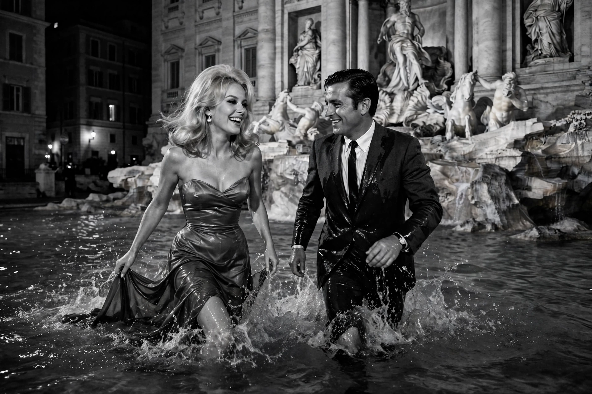

| La Dolce Vita | |
|---|---|
 The Trevi Fountain scene | |
| Directed by | Federico Fellini |
| Written by | Federico Fellini, Ennio Flaiano, Tullio Pinelli, Brunello Rondi |
| Starring | Marcello Mastroianni, Anita Ekberg, Anouk Aimée |
| Music by | Nino Rota |
| Release date | 1960 |
| Country | Italy |
| Language | Italian |
La Dolce Vita (Italian for "the sweet life") is a 1960 Italian comedy-drama film directed and co-written by Federico Fellini. It follows Marcello Rubini (Marcello Mastroianni), a tabloid journalist, over seven days and nights in Rome as he drifts through the city's decadent high society in a fruitless search for meaning and love. The film won the Palme d'Or at the 1960 Cannes Film Festival and the Academy Award for Best Costume Design.
The film is structured as a series of episodes. Marcello covers a helicopter-borne statue of Christ flying over Rome, a faked apparition of the Virgin Mary, and the arrival of the American starlet Sylvia Rank (Anita Ekberg), with whom he spends a night ending in the Trevi Fountain — the film's most famous scene. Other episodes include his friendship with the intellectual Steiner, who later murders his children and himself; a night with the heiress Maddalena; and a final debauched party at a castle, after which Marcello, on a beach at dawn, cannot understand the gestures of Paola, a young waitress who represents the innocence he has lost.
La Dolce Vita is a landmark portrait of Italy's post-war "economic miracle" and the emptiness of celebrity culture. Its portrayal of the freelance photographers who hounded celebrities gave the world the word paparazzi, from the character Paparazzo. The film was condemned by the Vatican newspaper L'Osservatore Romano yet became a huge international success, and it is consistently ranked among the greatest films of all time.
The film influenced generations of directors and was a key reference for Paolo Sorrentino's The Great Beauty (2013), which similarly follows a jaded journalist through Rome's party society.